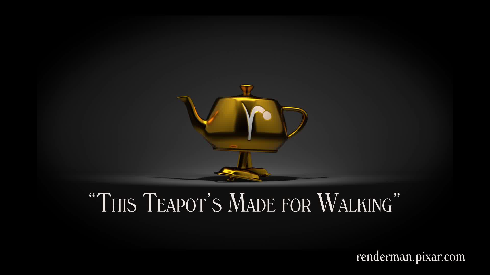
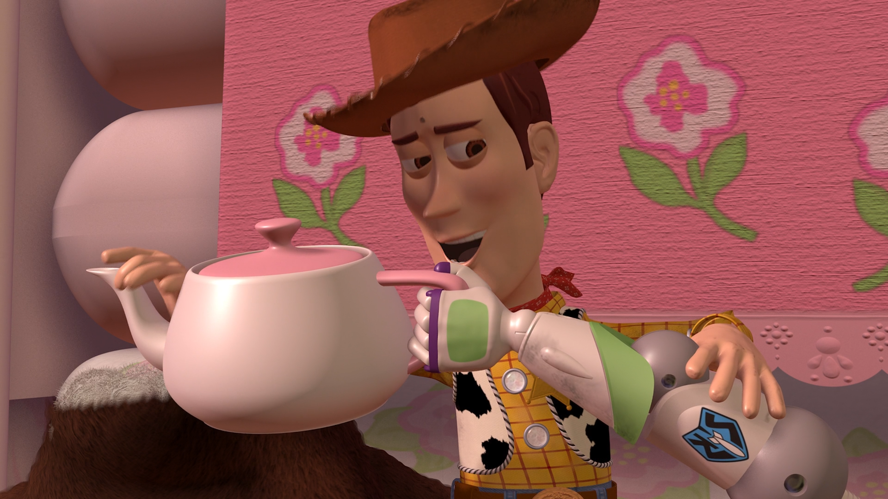
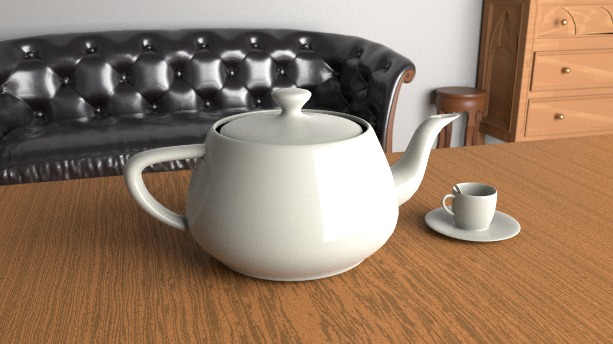
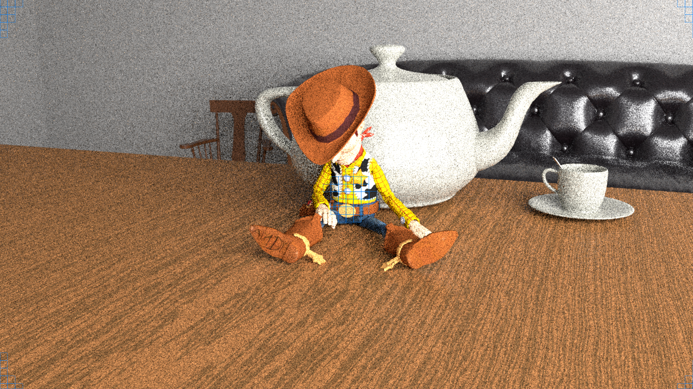

418 Error
Nobody dare mention the word Copyright here or the FBI might get involved
418 Error
The requested entity is short and stout, which means...
Let's stop and admire the wonderful Utah Teapot for what it is, and what it's not.
Martin Newell
For his work, Martin Newell needed a simple mathematical model of a familiar object. His wife, Sandra Newell, suggested modeling their tea set since they were sitting down for tea at the time. He sketched the teapot free-hand using graph paper and a pencil. Following that, he went back to the computer laboratory and edited bézier control points on a Tektronix storage tube, again by hand.
The teapot shape contained a number of elements that made it ideal for the graphics experiments of the time: it was round, contained saddle points, had a genus greater than zero because of the hole in the handle, could project a shadow on itself, and could be displayed accurately without a surface texture.
Newell made the mathematical data that described the teapot's geometry (a set of three-dimensional coordinates) publicly available, and soon other researchers began to use the same data for their computer graphics experiments. These researchers needed something with roughly the same characteristics that Newell had, and using the teapot data meant they did not have to laboriously enter geometric data for some other object. Although technical progress has meant that the act of rendering the teapot is no longer the challenge it was in 1975, the teapot continued to be used as a reference object for increasingly advanced graphics techniques.
Over the following decades, editions of computer graphics journals (such as the ACM SIGGRAPH's quarterly) regularly featured versions of the teapot: faceted or smooth-shaded, wireframe, bumpy, translucent, refractive, even leopard-skin and furry teapots were created.
Having no surface to represent its base, the original teapot model was not intended to be seen from below. Later versions of the data set fixed this.
The real teapot is 33% taller (ratio 4:3) than the computer model. Jim Blinn stated that he scaled the model on the vertical axis during a demo in the lab to demonstrate that they could manipulate it. They preferred the appearance of this new version and decided to save the file out of that preference.
Versions of the teapot model — or sample scenes containing it — are distributed with or freely available for nearly every current rendering and modelling program and even many graphic APIs, including AutoCAD, Houdini, Lightwave 3D, MODO, POV-Ray, 3ds Max, and the OpenGL and Direct3D helper libraries. Some RenderMan-compliant renderers support the teapot as a built-in geometry by calling RiGeometry("teapot", RI_NULL). Along with the expected cubes and spheres, the GLUT library even provides the function glutSolidTeapot() as a graphics primitive, as does its Direct3D counterpart D3DX (D3DXCreateTeapot()). While D3DX for Direct3D 11 does not provide this functionality anymore, it is supported in the DirectX Tool Kit. Mac OS X Tiger and Leopard also include the teapot as part of Quartz Composer; Leopard's teapot supports bump mapping. BeOS and Haiku include a small demo of a rotating 3D teapot, intended to show off the platform's multimedia facilities.
Teapot scenes are commonly used for renderer self-tests and benchmarks.
And that... definitely wasn't copied from Wikipedia... that would be absurd!
Anyway, the Utah Teapot is everywhere! Even Sheriff Woody seems to like it!



Frames: How should I know?. FPS: How dare. Working time: 80000 hrs. Made, edited and viewed without permission.